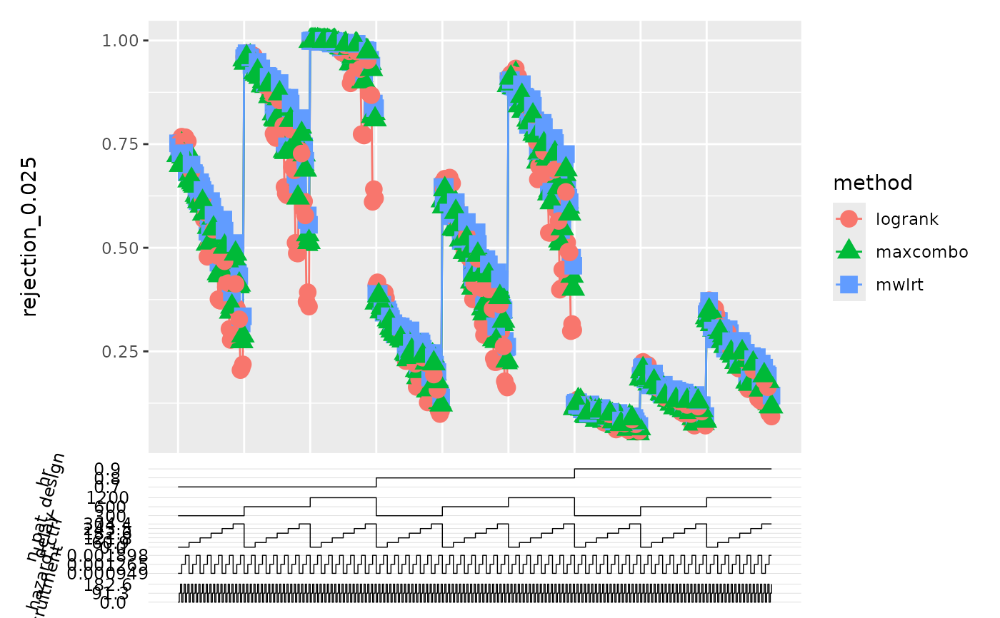

Functions for Plotting and Reporting Results
Usage
results_pivot_longer(data, exclude_from_methods = c("descriptive"))
combined_plot(
data,
methods,
xvars,
yvar,
facet_x_vars = c(),
facet_y_vars = c(),
split_var = 1,
heights_plots = c(3, 1),
scale_stairs = NULL,
grid_level = 2,
scales = "fixed",
hlines = numeric(0),
use_colours = NULL,
use_shapes = NULL,
expand_x_axis = c(0.05, 0, 0.05, 0)
)Arguments
- data
for results_pivot_longer: simulation result as retured by SimDesign, for combined_plot: simulation results in long format, as returned by
results_pivot_longer.- exclude_from_methods
"methods" that should not be pivoted into long format
- methods
methods to include in the plot
- xvars
orderd vector of variable names to display on the x axis
- yvar
variable name of the variable to be displayed on the y axis (metric)
- facet_x_vars
vector of variable names to create columns of facets
- facet_y_vars
vector of variable names to create rows of facets
- split_var
where should the lines be split, see details
- heights_plots
relative heights of the main plot and the stairs on the bottom
- scale_stairs
this argument is deprecated and will be ignored
- grid_level
depth of loops for which the grid-lines are drawn
- scales
passed on to facet_grid
- hlines
position of horizontal lines, passed as
yintercepttogeom_hline- use_colours
optional named vector of colours used in
scale_colour_manual- use_shapes
optional named vector of shapes used in
scale_shape_manual- expand_x_axis
axis expansion factor, passed to
scale_x_continuous
Value
dataset in long format with one row per method and scenario and one column per metric
a ggplot/patchwork object containing the plots
Details
With exclude_from_methods descriptive statistics or results of
reference methods can be kept as own columns and used like the columns of
the simulation parameters.
use_colours and use_shapes both use the method variable in their respective aesthetics.
split_var break the lines after the 1st, 2nd, ... variable in xvars. Use 0 for one continuous line per method.
Functions
results_pivot_longer(): pivot simulation results into long formatcombined_plot(): Nested Loop Plot with optional Facets
Examples
# \donttest{
data("combination_tests_delayed")
combination_tests_delayed |>
results_pivot_longer() |>
head()
#> # A tibble: 6 × 34
#> delay hazard_ctrl hr random_withdrawal n_pat_design followup recruitment
#> <dbl> <dbl> <dbl> <dbl> <dbl> <dbl> <dbl>
#> 1 0 0.00190 0.9 0.000190 300 730. 0
#> 2 0 0.00190 0.9 0.000190 300 730. 0
#> 3 0 0.00190 0.9 0.000190 300 730. 0
#> 4 60.9 0.00190 0.9 0.000190 300 730. 0
#> 5 60.9 0.00190 0.9 0.000190 300 730. 0
#> 6 60.9 0.00190 0.9 0.000190 300 730. 0
#> # ℹ 27 more variables: final_events <dbl>, hazard_trt <dbl>, n_ctrl <dbl>,
#> # n_trt <dbl>, median_survival_trt <dbl>, median_survival_ctrl <dbl>,
#> # rmst_trt_15 <dbl>, rmst_ctrl_15 <dbl>, gAHR_15 <dbl>, AHR_15 <dbl>,
#> # AHRoc_15 <dbl>, AHRoc_robust_15 <dbl>, REPLICATIONS <int>, SIM_TIME <dbl>,
#> # RAM_USED <chr>, SEED <int>, COMPLETED <chr>, method <chr>,
#> # rejection_0.025 <dbl>, N_missing_0.025 <dbl>, N <dbl>, mean_n_pat <dbl>,
#> # sd_n_pat <dbl>, mean_n_evt <dbl>, sd_n_evt <dbl>, N_missing_n_pat <dbl>, …
# }
# \donttest{
library("ggplot2")
library("patchwork")
data("combination_tests_delayed")
results_long <- results_pivot_longer(combination_tests_delayed)
# plot the rejection rate of two methods
combined_plot(
results_long,
c("logrank", "mwlrt", "maxcombo"),
c("hr", "n_pat_design", "delay", "hazard_ctrl", "recruitment"),
"rejection_0.025",
grid_level=2
)

# use custom colour and shape scales
# this can be used to group methods by shape or colour
# this is also helpful if methods should have the same aesthetics across plots
my_colours <- c(
logrank="black",
mwlrt="blue",
maxcombo="green"
)
my_shapes <- c(
logrank=1,
mwlrt=2,
maxcombo=2
)
combined_plot(
results_long,
c("logrank", "mwlrt", "maxcombo"),
c("hr", "n_pat_design", "delay", "hazard_ctrl", "recruitment"),
"rejection_0.025",
grid_level=2,
use_colours = my_colours,
use_shapes = my_shapes
)
# if one has a dataset of metadata with categories of methods
# one could uses those two definitions
# colours for methods, same shapes for methods of same category
metadata <- data.frame(
method = c("logrank", "mwlrt", "maxcombo"),
method_name = c("logrank test", "modestly weighed logrank test", "maxcombo test"),
category = c("logrank test", "combination test", "combination test")
)
my_colours <- ggplot2::scale_colour_discrete()$palette(n=nrow(metadata)) |>
sample() |>
setNames(metadata$method)
my_shapes <- metadata$category |>
as.factor() |>
as.integer() |>
setNames(metadata$method)
combined_plot(
results_long,
c("logrank", "mwlrt", "maxcombo"),
c("hr", "n_pat_design", "delay", "hazard_ctrl", "recruitment"),
"rejection_0.025",
grid_level=2,
use_colours = my_colours,
use_shapes = my_shapes
)
# }